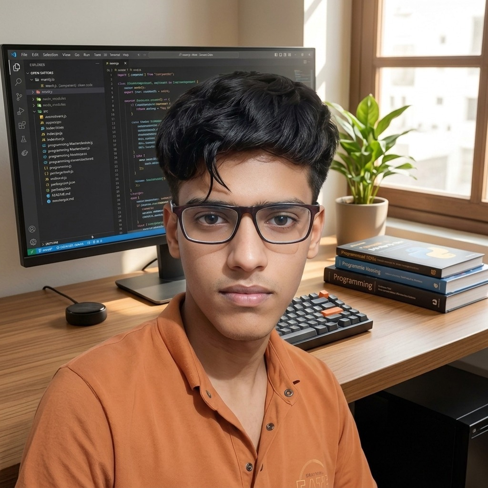

Miss Minute To The End — Scripting Guide
Complete reference documentation for the Miss Minutes animation scripting language, covering commands, variables, loops, expressions, audio sync, and best practices.
A personal notebook & digital workshop
I’m Prashant, a Grade 11 student from Janakpur, Nepal. I use AI coding tools to help turn my ideas into projects, then learn by exploring, testing, and improving what I make.

One question can become an experiment. An experiment can become a project, and a project can lead somewhere unexpected. This site keeps the trail: things I’ve built, what I’m learning, ideas still taking shape, and free writing from along the way.
More about me ↗Things I’ve made, explored, or am still figuring out.
↗02 / EXPLOREWriting & free writingNotes, reflections, discoveries, and whatever I’m thinking through.
↗03 / EXPLOREIdeas & theoriesQuestions and possibilities, shared as ideas rather than settled facts.
↗04 / EXPLOREExperimentsSmall tests and explorations that help me understand a question.
↗05 / EXPLOREUpdatesA dated record of what I’m working on and where things are going.
↗Writing tools · in progress
FlowWrite is Prashant Pandey’s writing application experiment, exploring rich documents, AI-assisted writing, history, and export.
Take a look ↗Technical notes, personal reflections, observations, and questions—whatever I’m trying to understand.
Complete reference documentation for the Miss Minutes animation scripting language, covering commands, variables, loops, expressions, audio sync, and best practices.
A detailed guide to the FlowWrite writing canvas, AI workflows, rich content, saving, search, import, and export systems.
No final version